Lemmings on a plank
Spencer and Justin
June 12, 2017
Dad said:
100 lemmings are positioned at 1-meter intervals along a narrow, 101-meter-long floating plank. (This is a 1-dimensional problem. Picture the plank as oriented left-right. The two outermost lemmings are 1 meter from the ends. Consider the lemmings to have zero length.) Each lemming is facing either left or right. At t=0, each lemming starts moving forward at 1 m/s. When two lemmings collide, each instantly reverses his direction of motion. Lemmings that reach the ends fall into the water and are out of play.
If you can dictate the initial orientation of each of the lemmings, i.e., choose each lemming’s initial direction of motion, what is the longest time the game can last before all the lemmings are in the water?
Let’s simulate this hybrid dynamical system to get a feel for it.

NDSolve[] bouncing ball example
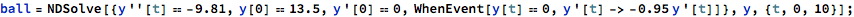

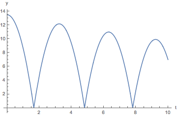
With 2 lemmings


Hack into the InterpolatingFunction to find its max domain:
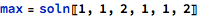
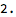


With n lemmings
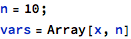


If there are no lemmings on the plank, stop.
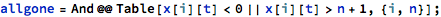
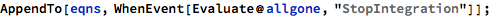
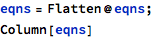
| x[1][0]==1 |
| 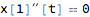 |
| x[2][0]==2 |
| x[3][0]==3 |
| 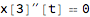 |
| x[4][0]==4 |
| 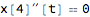 |
| 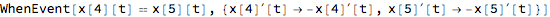 |
| x[5][0]==5 |
| 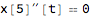 |
| 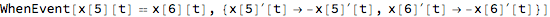 |
| x[6][0]==6 |
| x[7][0]==7 |
| 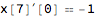 |
| 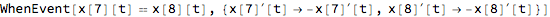 |
| x[8][0]==8 |
| 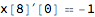 |
| 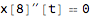 |
| x[9][0]==9 |
| 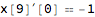 |
| x[10][0]==10 |
| WhenEvent[(x[1][t]<0||x[1][t]>11)&&(x[2][t]<0||x[2][t]>11)&&(x[3][t]<0||x[3][t]>11)&&(x[4][t]<0||x[4][t]>11)&&(x[5][t]<0||x[5][t]>11)&&(x[6][t]<0||x[6][t]>11)&&(x[7][t]<0||x[7][t]>11)&&(x[8][t]<0||x[8][t]>11)&&(x[9][t]<0||x[9][t]>11)&&(x[10][t]<0||x[10][t]>11),StopIntegration] |
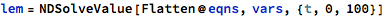
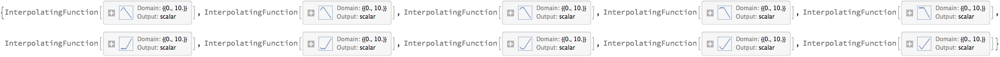
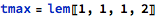


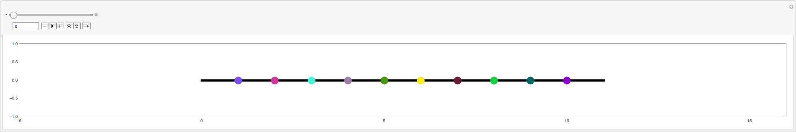
Spence pointed out that two lemmings bouncing off each other is actually the same as the lemmings just passing through each other. He pointed out that if the lemmings had nonzero width, the game would end sooner because they’d essentially teleport through teach other as they passed through.